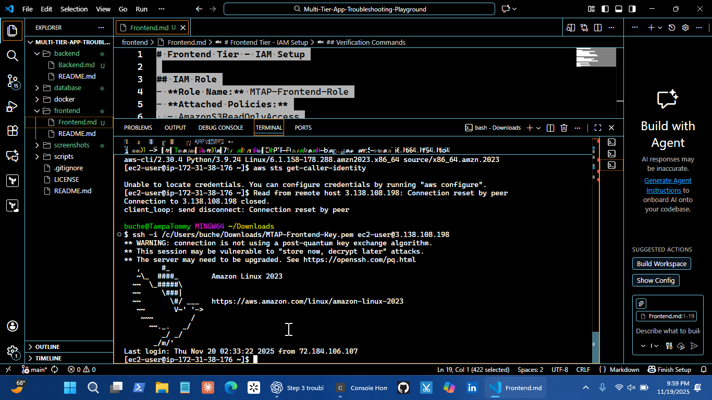
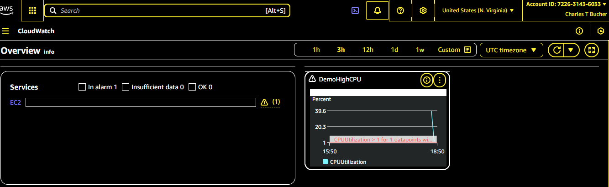
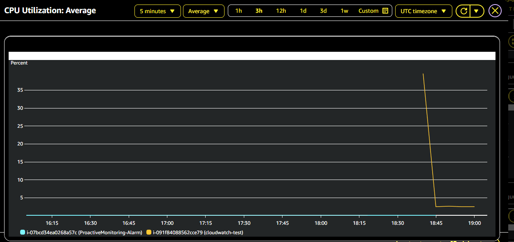

Portfolio Projects
Multi-Tier App Troubleshooting Playground
Hands-on AWS CloudOps lab deploying multi-tier web applications using EC2, VPC, Load Balancers, and CloudFormation/Terraform. Designed for troubleshooting, monitoring, alerting, and incident response practice.
AWS
EC2
VPC
Load Balancer
Terraform
CloudFormation


AWS Monitoring & Observability
Full AWS monitoring and alerting pipeline focused on EC2 health, performance metrics, anomaly detection, and automated incident response. Simulates real Cloud Support & NOC workflows.
AWS CloudWatch
Lambda
SNS
Python
Monitoring

